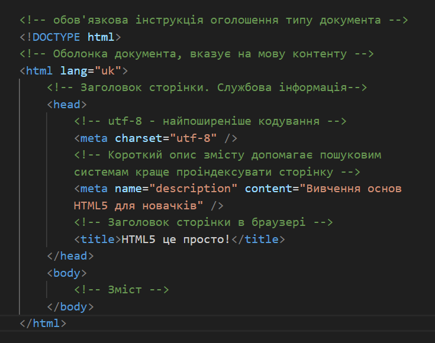

на сьогоднішньому занятті важливо зрозуміти як писати грамотний і семантичний код, виховувати відповідальне ставлення до семантики з перших кроків роботи у Front-end
Розмітка майбутньої веб-сторінки повинна мати смислове значення. На сторінці є секції, заголовки, списки, зображення, абзаци тексту тощо. Для опису всього цього багатства типів контенту існують відповідні теги.
Семантична розмітка - підхід до створення HTML-розмітки ґрунтується на використанні тегів за їх призначенням відповідно до специфікації і, які відповідають типу контенту, що розмічується.

Під час розмітки абзацу тексту ми використовуємо тег p, для розмітки посилання існує тег a, контентне зображення представлено тегом img тощо.
Тобто семантична розмітка означає, що теги не вибираються на підставі того, як вони відображаються в браузері - вони вибираються на підставі типу та структури контенту, який розмічується.
Давайте розберемо, з чого складається найпростіший html документ. HTML-документ складається з «дерева» тегів:

<!DOCTYPE> - це не тег, а обов'язкова інструкція оголошення типу документа. Вона потрібна для того, щоб повідомити браузеру, в якій версії HTML написаний документ.
На підставі доктайпу браузер визначає версію HTML і правильно відображає сторінку. Оголошення типу документа повинно бути найпершим, що бачить браузер під час обробки HTML-документа.
Приклади оголошення типу документу раніше в інших версіях
Тег <html> - Кореневий елемент документа як контейнер, який містить в собі увесь вміст сторінки. Все, що знаходиться за його межами, не сприймається браузером як HTML-код і не обробляється.
Атрибут lang вказує, якою мовою написаний текст сторінки.
Тег <head> - Призначений для зберігання службової інформації про сторінку: заголовок, опис, кодування тощо. Вся ця інформація не відображається у вікні браузера, однак, містить дані, які вказують браузеру, яким чином потрібно обробляти сторінку.
Тег <body> - Містить вміст майбутньої веб-сторінки. Контент, який повинен відображатися на сторінці, варто розташовувати саме всередині цього тегу.
Якщо сторінка містить текст різними мовами, для того щоб зробити її доступнішою для допоміжних технологій, можна задавати атрибут lang не тільки всьому документу, а й окремим тегами.
Група службових тегів, які розташовуються в шапці документа. Більшість з них безпосередньо не відображаються у вікні браузера. Містять здебільшого інформацію для браузерів та пошукових систем
Текст, розміщений всередині тегу <title> , відображається у вкладці браузера. Довжина заголовка повинна бути не більше 60 символів, щоб повністю поміститися у заголовку. Текст заголовка повинен містити короткий опис вмісту веб-сторінки.
Тег <meta> використовується для зберігання інформації, призначеної для браузера і пошукових систем: встановлення кодування документа, передача інформації пошуковим системам і багато іншого. Мета-тегів може бути кілька, тому що, залежно від використаних атрибутів, вони несуть різну інформацію
Кодування сторінки необхідно вказати для того, щоб браузер коректно відобразив текст. Якщо цього не зробити, або задати невірне кодування, замість символів браузер може відобразити ієрогліфи.

Існує цілий набір семантичних тегів для розмітки великих логічних розділів і поліпшення структурної семантики сторінки. Кожен з них може бути використаний за певних умов. Це впливає на роботу асистивних технологій, індексування сторінки та її рейтинг видачі у пошуку.

ctrl + / або cmd + /


Всі технології підпорядковуються певним стандартам та правилам. Це стосується й HTML.
Валідна верстка — це верстка, яка зроблена за всіма стандартами W3C (www consortium). Тобто верстку можна вважати валідною лише тоді, коли вона буде відповідати встановленим W3C стандартам. У коді важлива кожна кома, лапки і дужка, ім'я атрибута і тегу, відкриваючий і закриваючий тег. Очима, особливо новачкам, за усім цим не встежити, тому придумали валідатор.
Валідація потрібна для виявлення помилок у синтаксисі розмітки HTML-документа і розбіжностей з HTML-специфікацією, вказаною в DOCTYPE .
Програма для такої перевірки називається валідатором. В результаті валідації, документ або проходить валідацію, або отримує список рекомендованих виправлень.
досить зайти на сайт https://validator.w3.org/ і там перевірити хоч за посиланням на сайт, хоч завантаживши файл сторінки і навіть скопіювавши код у вікно на сайті.


Це сайт, який швидко та легко підкаже, чи можна один тег вкладати в інший!
Заходимо на сайт Figma для реєстрації
Посилання на https://squoosh.app/